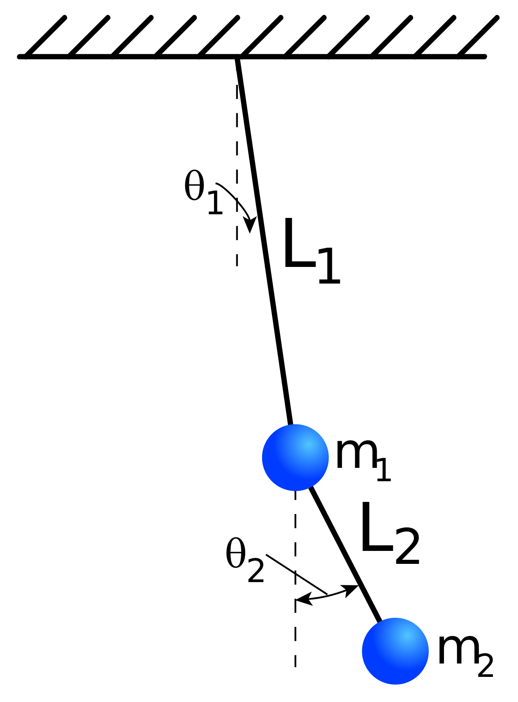

Двойной маятник
Двойным маятником называют систему с двумя степенями свободы,
которая получается в результате соединения двух маятников посредством связей,
в нашем случае твердых. Данная система интересна различными опытами.
В частности, малые колебания двойных маятников в окрестности их положения устойчивого
равновесия дают наглядное представление важных оптических и акустических явлений:
интерференции и биения. А при увеличении энергии характер колебаний маятников принципиально меняется - колебания становятся хаотическими.
Введем обозначения:
\( m_1 = \) масса первого шарика
\( m_2 = \) масса второго шарика
\( x_1 = \) горизонтальная координата шарика с массой \( m_1 \)
\( x_2 = \) горизонтальная координата шарика с массой \( m_2 \)
\( y_1 = \) вертикальная координата шарика \( m_1 \)
\( y_2 = \) вертикальная координата шарика \( m_2 \)
\( L_1 = \) длина крепления первого шарика
\( L_2 = \) длина крепления второго шарика
\( \theta_1 = \) угол первого маятника
\( \theta_2 = \) угол второго маятника
\( T = \) кинетическая энергия маятника
\( V = \) потенциальная энергия маятника
\( \mu = 1 + \frac{m_1}{m_2} \)
Для построения математической модели двойного маятника понадобится: тригонометрия, первая производная, вторая производная и школьная физика.

Координаты, скорость и ускорения можем найти по формулам:
\[ x_{1} = L_{1}sin\theta_{1} \qquad x_{1}^{'} = \theta_{1}^{'}L_{1}cos\theta_{1} \qquad x_{1}^{''} = -\theta_{1}^{''}L_{1}sin\theta_{1} + \theta_{1}^{''}L_{1}cos\theta_{1} \]
\[ y_{1} = -L_{1}cos\theta_{1} \qquad y_{1}^{'} = \theta_{1}^{'}L_{1}sin\theta_{1} \qquad y_{1}^{''} = \theta_{1}^{''}L_{1}cos\theta_{1} + \theta_{1}^{''}L_{1}sin\theta_{1} \]
\[ x_{2} = x_1 + L_{2}sin\theta_{2} \qquad x_{2}^{'} = x' + \theta_{2}^{'}L_{2}cos\theta_{2} \qquad x_{2}^{''} = x_{1}^{''} - \theta_{2}^{''}L_{2}sin\theta_{2} + \theta_{1}^{''}L_{1}cos\theta_{1} \]
\[ y_{2} = y2 - L_{2}cos\theta_{2} \qquad y_{2}^{'} = y' + \theta_{2}^{'}L_{2}sin\theta_{2} \qquad y_{2}^{''} = y_{1}^{''} + \theta_{2}^{''}L_{2}cos\theta_{2} + \theta_{1}^{''}L_{1}sin\theta_{1} \]
Кинетическая и потенциальная энергия выражается следующим образом:
\[ T = \frac{m_1(\dot{x_1^2} + \dot{y_1^2})}{2}+\frac{m_1(\dot{x_2^2} + \dot{y_2^2})}{2} \] \[ V= m_1y_1g +m_2y_2g \]
Используя Лагранжиан получаем:
\[ L= T_1+T_2 - V_1 - V_2 = \frac{m_1(\dot{x_1^2} + \dot{y_1^2})}{2}+\frac{m_1(\dot{x_2^2} + \dot{y_2^2})}{2} - m_1y_1g -m_2y_2g \]
Уравнение Лагранжиан для \( \theta_{1} \) и \( \theta_{2} \):
\[ \frac{d}{dt}(\frac{\partial L}{\partial\theta_{i}^{'}}) - \frac{\partial L}{\partial \theta_{i}} = 0 \]
Опустив детали вычисления мы получаем следующие уравнения, описывающие поведение двойного маятника:
\[ \ddot{\theta_{1}}= \frac{g(sin\theta_{2}cos(\theta_{1} - \theta_{2}) - \mu sin\theta_{1}) - (L_2 \dot{\theta_{2}}^2 + L_1 \dot{\theta_{1}}^2cos(\theta_{1} - \theta_{2}))sin(\theta_{1} -\theta_{2})}{L_1(\mu-cos^2(\theta_{1} -\theta_{2}))} \]
\[\ddot{\theta_{2}}= \frac{\mu g(sin\theta_{1}cos(\theta_{1} - \theta_{2}) - sin\theta_{1}) +(\mu L_1 \dot{\theta_{1}}^2 + L_2 \dot{\theta_{2}}^2cos(\theta_{1} - \theta_{2}))sin(\theta_{1} -\theta_{2})}{L_2(\mu-cos^2(\theta_{1} -\theta_{2}))}\]
Спасибо за внимание.
Проект выполнил: студент 2 курса 176 группы ПМИ,
Рословец Владислав
21 Апреля 2019